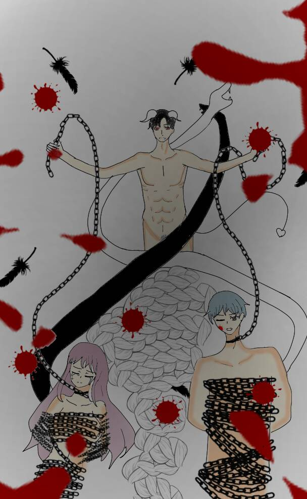

惡魔 The Devil
元素土
對應牌5教皇
對應星座魔羯座
牌義惡魔以人心的黑暗為食，當人困在自己錯誤的信念中而不自知時，
就是把慾念餵食惡魔，牌面上有一獸身羊角和鳥刺的惡魔，它的腳下有兩被捆綁的男女，
他們的頭上長出角來，代表他們成為惡魔的門徒。惡魔煽動了男人的慾望之火，
他們脖子上的鐵鍊代表限制自己的錯誤想法，其實這鐵鍊是可以拿開的，但他們卻沉溺於痛苦中，
“受信念控制”是惡魔的症候。
關鍵語限制、物慾、壓抑、誘惑★暗示錯以為別無選擇自我設限
牌正面被自己的恐懼阻礙了自己，控制，物質化的觀點。
牌反面捐棄控制生命的需求，正視自己的黑暗面,嘗試性的走向自由，做出選擇。
惡魔牌並不是一張完全負面的牌，因為一切動物最基本的慾望就是生存與存在，
包括人類。在文明社會還未創立之前，宗教禮俗、道德觀念並沒有完全的成型，
當時的人類追求原始的本能欲望，交配生育、飲食享樂等，跟隨著人類歷史的推進，
這些欲望也轉變為對於物質、權力、名聲、性愛等。將占有當作愛情，將金錢當作快樂，
將權力和名聲當作是自我強大的表現，陷入追逐物質的輪迴，同時也離真正的自由與快樂越來越遠。
惡魔卻早已超越了原有的限度，不顧及世俗的道德底線，只為讓自己得到快樂。
離開卡牌